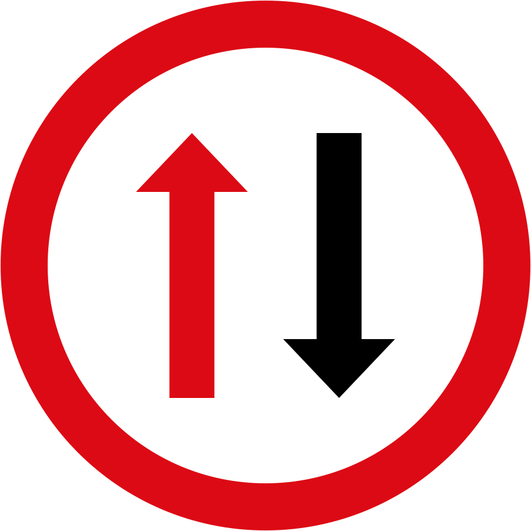
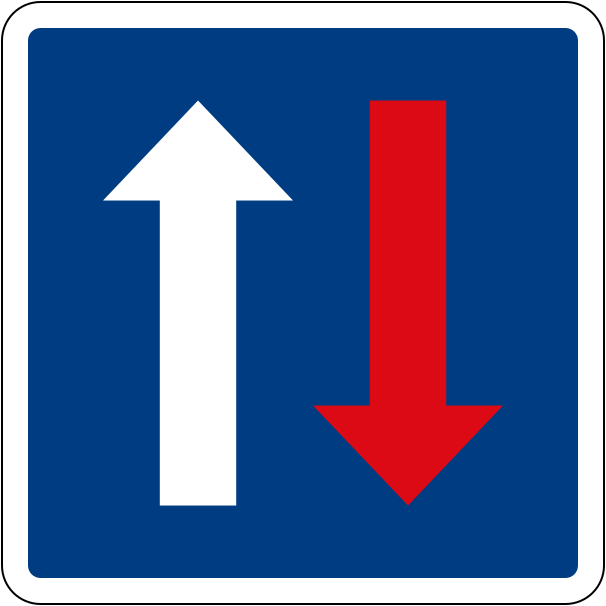

🛑 Priority Signs
01. Stop to give priority
02. Give way to vehicles on the adjacent road
03. Priority road
04. End of priority road

05. Give way to oncoming traffic

06. Priority over oncoming traffic